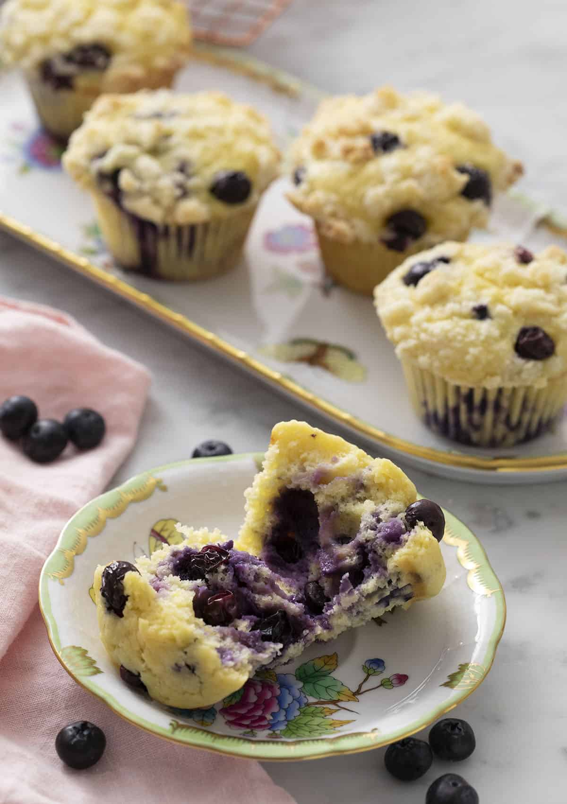

Blueberry Muffins

Made with simple everyday ingredients, these Blueberry Muffins are buttery, soft, tender, and bursting with fresh blueberries.
Topped with a sweet streusel topping, these muffins taste even better than the ones at your local bakery. They're perfect for breakfast or as an easy grab-and-go snack.
Ingredients
For the Muffins
- 2 ½ cup all-purpose flour (300g)
- 1 teaspoon salt
- 2 teaspoon baking powder
- ¼ cup butter (56g), unsalted, melted
- ¼ cup vegetable oil (60mL)
- 1 cup whole milk (240ml)
- ¾ cup granulated sugar (170g)
- ¼ cup sour cream (60ml)
- 2 teaspoon vanilla extract
- 1 tablespoon lemon zest
- 2 eggs room temperature
- ¼ cup lemon juice (60ml)
- 8 oz blueberries fresh
For the Streusel Topping
- ½ cup all-purpose flour (60g)
- ½ cup granulated sugar (100g)
- ¼ cup unsalted butter (56g)
- 1 pinch salt
Steps
For the Streusel Topping
- Whisk the flour, sugar and salt in a medium bowl then add the cubed butter.
- Use your clean fingers to crumble the butter and flour together until you have a shaggy mixture. I like to press large handfuls together at the end then gently break apart to create a range various sized clumps.
For the Muffins
- Preheat to 400 degrees F. Prepare your muffin tin by either greasing the wells or adding paper liners.
- Add the flour, baking powder and salt to a large bowl then whisk together and set aside.
- Toss the blueberries In about a tablespoon of the dry mixture and set aside. This will help prevent them from sinking in the batter.
- In a medium bowl, add melted butter, oil, milk, sugar, vanilla, eggs, lemon juice, sour cream, and lemon zest then whisk together until combined.
- Pour the wet mixture Into the dry then mix until almost combined. Add the blueberries and fold in.
- Transfer batter to your prepared muffin tin filling the wells to the top. Cover with the streusel topping.
- Bake for about 20 minutes at 400F. I like to add a ramekin filled halfway with water to keep the muffins nice and moist during the bake but this is optional. Let the muffins cool in the tin for at least 10 minutes before removing.